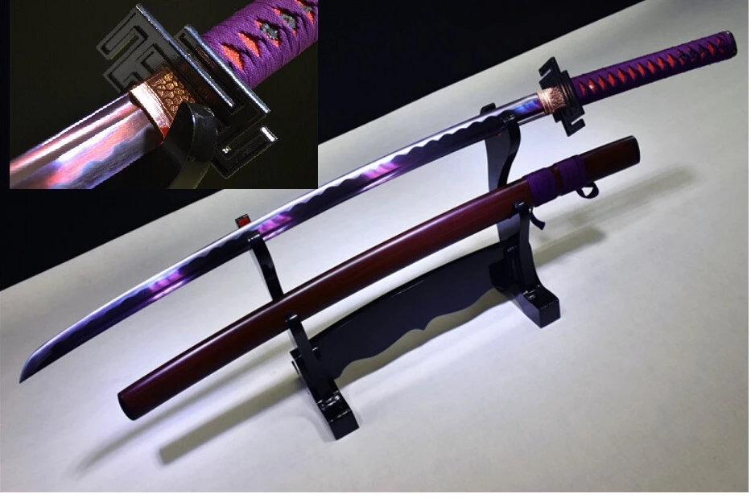
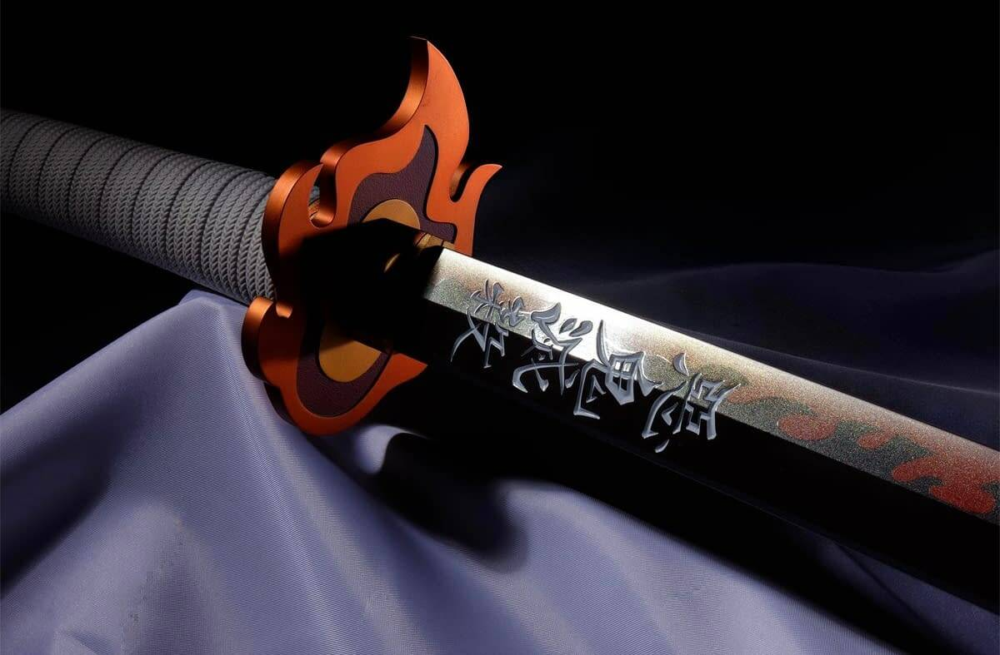

Katana
A katana (刀 or かたな) is a Japanese sword characterized by a curved, single-edged blade with a circular or squared guard and long grip to accommodate two hands. Developed later than the tachi, it was used by samurai in feudal Japan and worn with the blade facing upward. Since the Muromachi period, many old tachi were cut from the root and shortened, and the blade at the root was crushed and converted into katana.The official term for katana in Japan is uchigatana (打刀) and the term katana (刀) often refers to single-edged swords from around the world
The word katana first appears in Japanese in the Nihon Shoki of 720. The term is a compound of kata ("one side, one-sided") + na ("blade"), in contrast to the double-sided tsurugi. See more at the Wiktionary entry. The katana belongs to the nihontō family of swords, and is distinguished by a blade length (nagasa) of more than 2 shaku, approximately 60 cm (24 in). Katana can also be known as dai or daitō among Western sword enthusiasts, although daitō is a generic name for any Japanese long sword, literally meaning "big sword". As Japanese does not have separate plural and singular forms, both katanas and katana are considered acceptable forms in English. Pronounced [katana], the kun'yomi (Japanese reading) of the kanji 刀, originally meaning dao or knife/saber in Chinese, the word has been adopted as a loanword by the Portuguese. In Portuguese the designation (spelled catana) means "large knife" or machete.
 